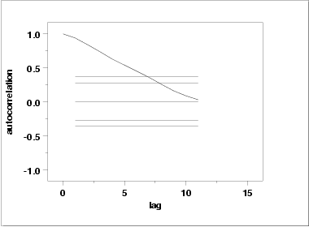

|
1.
Exploratory Data Analysis
1.4. EDA Case Studies 1.4.2. Case Studies 1.4.2.6. Filter Transmittance
|
|||
| Summary Statistics |
As a first step in the analysis, common summary statistics are
computed from the data.
Sample size = 50
Mean = 2.0019
Median = 2.0018
Minimum = 2.0013
Maximum = 2.0027
Range = 0.0014
Stan. Dev. = 0.0004
|
||
| Location |
One way to quantify a change in location over time is to
fit a straight line
to the data using an index variable as the independent
variable in the regression. For our data, we assume
that data are in sequential run order and that the
data were collected at equally spaced time intervals. In our regression,
we use the index variable X = 1, 2, ..., N, where N is the number
of observations. If there is no significant drift in the location
over time, the slope parameter should be zero.
Coefficient Estimate Stan. Error t-Value
B0 2.00138 0.9695E-04 0.2064E+05
B1 0.185E-04 0.3309E-05 5.582
Residual Standard Deviation = 0.3376404E-03
Residual Degrees of Freedom = 48
The slope parameter, B1, has a
t value of 5.582,
which is statistically significant. Although the estimated slope,
0.185E-04, is nearly zero, the range of data (2.0013 to 2.0027) is
also very small. In this case, we conclude that there is drift
in location, although it is relatively small.
|
||
| Variation |
One simple way to detect a change in variation is with a
Bartlett test after dividing the
data set into several equal sized intervals. However, the Bartlett
test is not robust for non-normality. Since the normality assumption
is questionable for these data,
we use the alternative Levene
test. In particular, we use the Levene test based on the median
rather the mean. The choice of the number of intervals is somewhat
arbitrary, although values of four or eight are reasonable.
We will divide our data into four intervals.
H0: σ12 = σ22 = σ32 = σ42
Ha: At least one σi2 is not equal to the others.
Test statistic: W = 0.971
Degrees of freedom: k - 1 = 3
Significance level: α = 0.05
Critical value: Fα,k-1,N-k = 2.806
Critical region: Reject H0 if W > 2.806
In this case, since the Levene test statistic value of 0.971 is
less than the critical value of 2.806 at the 5 % level, we conclude that
there is no evidence of a change in variation.
|
||
| Randomness |
There are many ways in which data can be non-random. However,
most common forms of non-randomness can be detected with a
few simple tests. The lag plot in the 4-plot in the previous
seciton is a simple graphical technique.
One check is an autocorrelation plot that shows the autocorrelations for various lags. Confidence bands can be plotted at the 95 % and 99 % confidence levels. Points outside this band indicate statistically significant values (lag 0 is always 1).  The lag 1 autocorrelation, which is generally the one of most interest, is 0.93. The critical values at the 5 % level are -0.277 and 0.277. This indicates that the lag 1 autocorrelation is statistically significant, so there is strong evidence of non-randomness. A common test for randomness is the runs test.
H0: the sequence was produced in a random manner
Ha: the sequence was not produced in a random manner
Test statistic: Z = -5.3246
Significance level: α = 0.05
Critical value: Z1-α/2 = 1.96
Critical region: Reject H0 if |Z| > 1.96
Because the test statistic is outside of the critical region, we
reject the null hypothesis and conclude that the data are not random.
|
||
| Distributional Analysis | Since we rejected the randomness assumption, the distributional tests are not meaningful. Therefore, these quantitative tests are omitted. We also omit Grubbs' outlier test since it also assumes the data are approximately normally distributed. | ||
| Univariate Report |
It is sometimes useful and convenient to summarize the above
results in a report.
Analysis for filter transmittance data
1: Sample Size = 50
2: Location
Mean = 2.001857
Standard Deviation of Mean = 0.00006
95% Confidence Interval for Mean = (2.001735,2.001979)
Drift with respect to location? = NO
3: Variation
Standard Deviation = 0.00043
95% Confidence Interval for SD = (0.000359,0.000535)
Change in variation?
(based on Levene's test on quarters
of the data) = NO
4: Distribution
Distributional tests omitted due to
non-randomness of the data
5: Randomness
Lag One Autocorrelation = 0.937998
Data are Random?
(as measured by autocorrelation) = NO
6: Statistical Control
(i.e., no drift in location or scale,
data are random, distribution is
fixed, here we are testing only for
normal)
Data Set is in Statistical Control? = NO
7: Outliers?
(Grubbs' test omitted) = NO
|
||